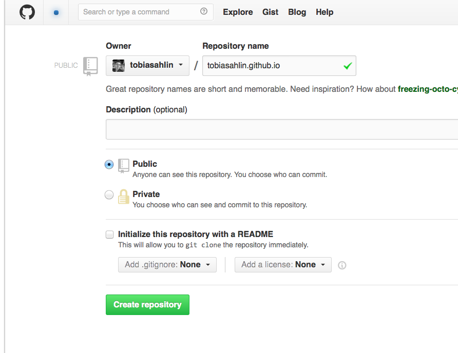

build blog with orgmode and github pages
Table of Contents
Create a repository
Head over to GitHub and create a new repository named username.github.io, where username is your username (or organization name) on GitHub.
If the first part of the repository doesn’t exactly match your username, it won’t work, so make sure to get it right.

configurations
prepare disqus
for comments, use disqus
emacs configuration
(require 'org-publish) (setq org-publish-project-alist '( ("blog-notes" :base-directory "/var/virtual/home-bak/org/blog" :base-extension "org" :publishing-directory "/var/virtual/home-bak/org/kumakichi.github.io/" :recursive t :publishing-function org-html-publish-to-html :headline-levels 4 :section-numbers nil :auto-preamble t :auto-sitemap t ; Generate sitemap.org automagically... :sitemap-filename "index.org" ; ... call it sitemap.org (it's the default)... :sitemap-title "San's notebook" ; ... with title 'Sitemap'. :html-link-home "index.html" :author "kumakichi" :email "$(dc -e 40964654306938118710083764053554616036618P)" :html-head "<link rel='stylesheet' type='text/css' href='css/main.css'/>" :html-postamble "<div id='disqus_thread'></div> <script type='text/javascript'> /* * * CONFIGURATION VARIABLES * * */ var disqus_shortname = 'callmesanye'; /* * * DON'T EDIT BELOW THIS LINE * * */ (function() { var dsq = document.createElement('script'); dsq.type = 'text/javascript'; dsq.async = true; dsq.src = '//' + disqus_shortname + '.disqus.com/embed.js'; (document.getElementsByTagName('head')[0] || document.getElementsByTagName('body')[0]).appendChild(dsq); })(); </script> <noscript>Please enable JavaScript to view the <a href='https://disqus.com/?ref_noscript' rel='nofollow'>comments powered by Disqus.</a></noscript> <p class='author'>Author: %a (%e)</p><p>Exported At %T. Created by %c </p> <a href='#' class='back-to-top' id='fixed-back-to-top' style='display: inline;'></a>" ) ("blog-static" :base-directory "/var/virtual/home-bak/org/blog/" :base-extension "css\\|js\\|png\\|jpg\\|gif\\|pdf\\|mp3\\|ogg\\|swf" :publishing-directory "/var/virtual/home-bak/org/kumakichi.github.io/" :recursive t :publishing-function org-publish-attachment ) ("blog" :components ("blog-notes" "blog-static")) ;; ))
if you use older version
if you come across this error:
Symbol's function definition is void: org-html-publish-to-html
set :publishing-function of blog-notes as :
:publishing-function org-publish-org-to-html
use it
edit .org files under /var/virtual/home-bak/org/blog
then, M-x, org-publish-project, RET, blog, RET
# add files under kumakichi.github.io
cache files
located at
~/.org-timestamps